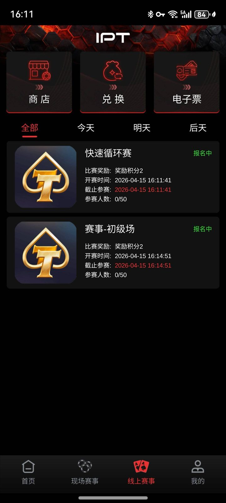
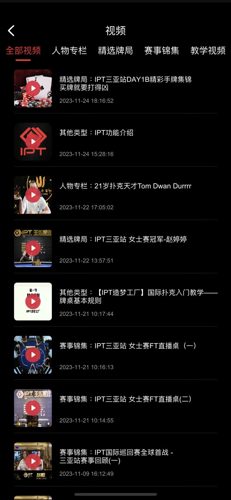
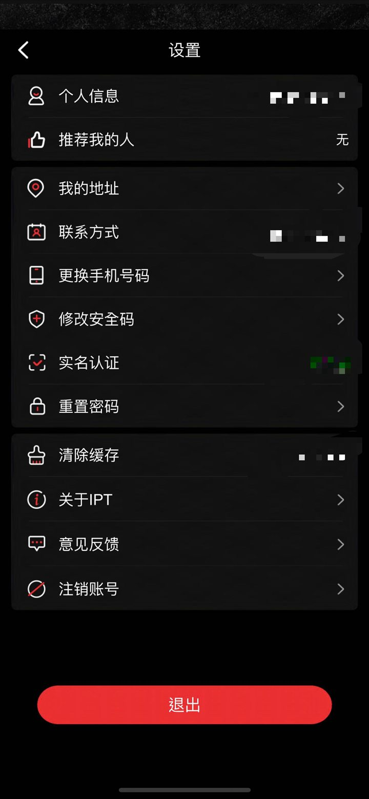
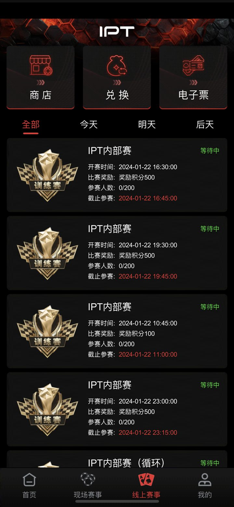
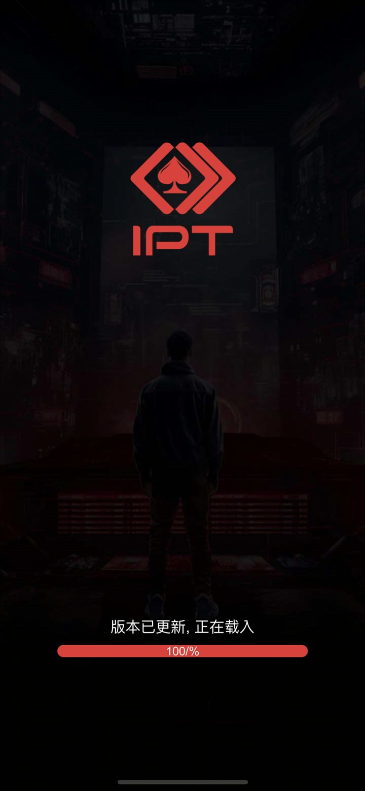
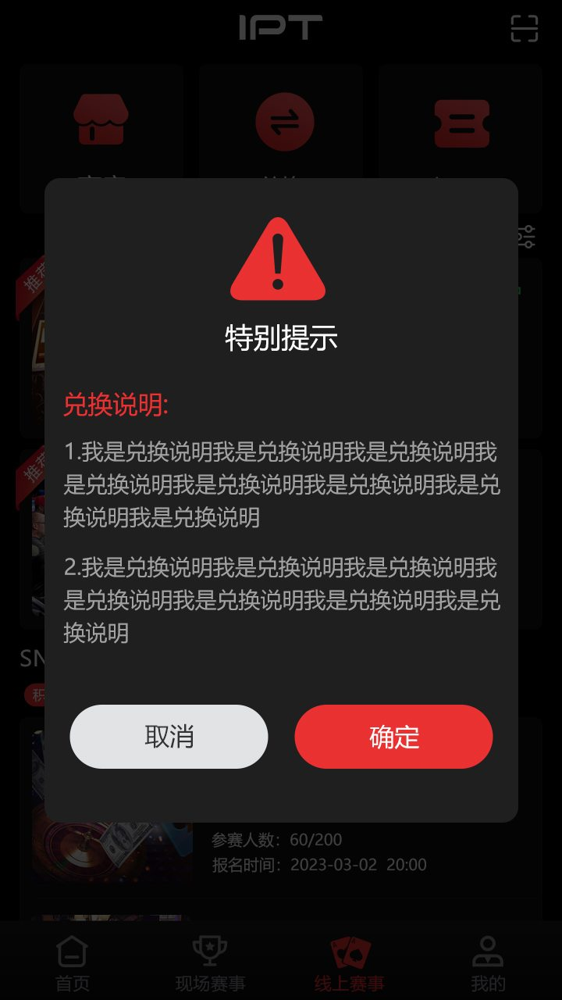

赛事移动端界面
9 张仓库截图展示报名倒计时、线上赛事列表、训练赛、赛事资讯、视频、兑换、设置和收藏牌局。
Texas Hold’em Tournament Source Code
面向赛事平台研究与二次开发的公开资料库：用真实文件展示 C++ 游戏服务接口、Tars 服务调用、MySQL 配置读取、Lua 资源、接口文档与移动端赛事流程。
德州扑克锦标赛源码 · 扑克赛事平台 · C++ 游戏服务 · Tars · MySQL · Lua
01 / Repository evidence
下面每项都指向仓库现有文件。它们说明公开资料的范围，但不等同于一个可直接编译的完整产品。
9 张仓库截图展示报名倒计时、线上赛事列表、训练赛、赛事资讯、视频、兑换、设置和收藏牌局。
gameserver.cpp/.h 负责外部消息接收、协议版本检查，以及单人、全桌和旁观者消息发送。
OuterFactoryImp.cpp 配置并获取 Config、DBAgent、Push 与 Hall 服务代理。
DBOperator.cpp/.h 读取机器人场次和补充金币配置；robot.sql 给出表结构与样例数据。
仓库包含 Lua .bytes 资源、拼音/字典资源，以及 Unity 风格的资源命名和图集规范。
docs/api_documentation.md 描述登录、房间、牌桌和赛事消息；部署指南提供环境示例，实际依赖仍需核验。
02 / Product screens
图片来自仓库 docs/Assets/Screenshots/，已复制并压缩为适合 README 与 GitHub Pages 使用的本地文件。







03 / Tournament flow
从首页、现场赛事或线上赛事入口查看比赛、资讯、教学和视频。
列表展示开赛时间、截止报名时间、奖励、参赛人数和当前状态。
进入赛事牌桌后显示空位、当前人数和开赛倒计时，可在开赛前取消报名。
牌桌通信接口支持单人、全桌与旁观者消息；收藏页展示翻牌前后行动记录。
04 / Source map
建议先从入口文件和文档开始，再检查缺失依赖。
| File / module | Evidence |
|---|---|
gameserver.cpp / gameserver.h | 游戏与外部系统之间的消息入口、协议封装与广播接口 |
gameroot.cpp / gameroot.h | 游戏配置、插件、上下文、处理器与通信句柄的根对象 |
Processor.cpp | Tars 请求处理与异步业务入口 |
OuterFactoryImp.cpp | 配置、数据库代理、推送和大厅服务代理初始化 |
DBOperator.cpp / DBOperator.h | MySQL 连接与机器人配置读取 |
robot.sql | 机器人配置表结构及示例记录 |
*.lua.bytes | 界面、对象、场景、拼音和字典相关 Lua 资源 |
docs/api_documentation.md | 登录、房间、牌桌、俱乐部、锦标赛和管理接口示例 |
docs/deployment_guide.md | 部署说明模板；部分路径和组件在公开仓库中不存在，需按完整工程验证 |
05 / FAQ
当前公开文件不足以独立完成构建。部署前需要补齐头文件、协议定义、构建配置、客户端工程和运行配置。
截图能证明赛事列表、报名状态、开赛倒计时、训练赛、资讯/视频和收藏牌局界面；API 文档另有赛事列表与报名消息示例。
源码可直接证明 C++、Tars 风格服务代理、MySQL 访问和消息序列化接口；部署文档提及的 Redis、Java 与 Unity 需结合完整工程复核。
先核对 `LICENSE` 与 `License.md` 的冲突，并确认截图中的品牌、赛事素材和完整工程分别拥有合法授权。
阅读源码地图、API 文档和部署边界，再决定需要补齐的工程文件与测试范围。